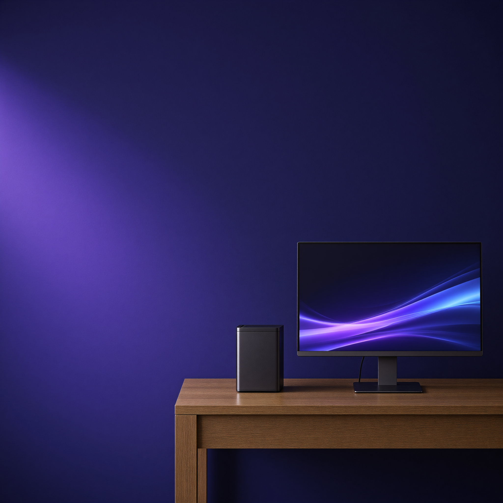
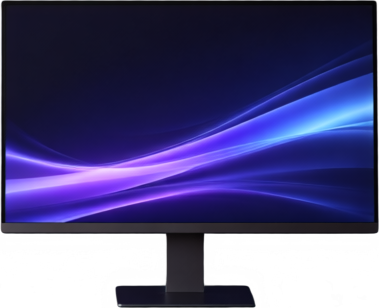

Independent builder · Local AI
Local AI,
put to work.
I’m Joey Rodriguez. I build practical AI tools on hardware I own, then show what works, what breaks, and how people can use it.
01 / The project
The page you’re looking at is the use case.
The studio image started as a plain-language prompt in AntLing Design Lab. The image model made the visual; the layer model separated its parts. Then we built a real page around it with responsive layout, live text, and working controls.
That’s the shift I care about: taking a local model output beyond the download button and putting it into something useful.
Look inside the image- 01
Make the visual
A text prompt became the 2048px studio photograph you see above.
- 02
Separate the pieces
A second model turned the photograph into individual raster layers.
- 03
Build the page
HTML and CSS added readable copy, navigation, and layouts for every screen size.
02 / Under the image
One scene.
Separate pieces.
The split model lets us inspect the parts of the image on their own. Select a layer to see what the model returned, including where its edges need work.
These cropped previews come from 1024px raster layers. The website hero uses the original 2048px image.
Open AntLing Design Lab (local)
{kind=link}
03 / Why I build
Experiments are better when you can use them.
I work with local AI because the best test of a model is what it helps you make. I build tools, try them in real workflows, and share the results as clearly as I can.
Back to the top